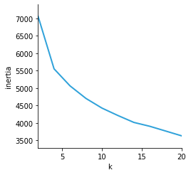
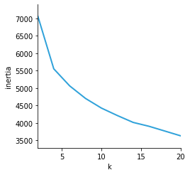

This is a model that capable of forecasting an individual's susceptibility toHeart Attacks.
This projected was authored by:
Deepika Prichikala - Dhawanpreet Dhaliwal - Huma Alima - Leif Munroe - Ron Briggs
This is a model that capable of forecasting an individual's susceptibility toHeart Attacks.
Choose a scenario to see the prediction based on our model
Our model's True Negative Results. This shows us how many of the unlikely to have a heart attack results were correctly predicted by the model. The model was able to predict 29 out of 35 negative, not likely to suffer from a heart attack prediction.

Our model's True Positive Results. This shows us how many individuals are likely to have a heart attack. These results below show how many were correctly predicted by the model. The model was able to predict 36 out of 40 positive, likely to suffer from a heart attack prediction.

Our model's False Negative Results. This shows us how many individuals were flasely predicted by the model that they are not at risk of a heart attack. The model incorrectly predicts the negative case 4 times. This would mean an individual would be predicted as low risk of an hear attack but in reality they are high risk.

Our model's False Positive Results. This shows us how many individuals were flasely predicted by the model that they are at risk of a heart attack. The model incorrectly predicts the positive case 6 times. This would mean an individual would be predicted as high risk of an heart attack but in reality they are low risk.


This projected was authored by:
Deepika Prichikala - Dhawanpreet Dhaliwal - Huma Alima - Leif Munroe - Ron Briggs
 
